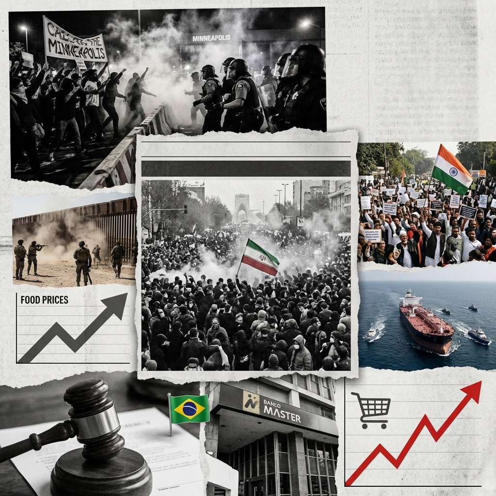

The Daily Globe: US Anti-ICE Protests Amid Trump's Immigration Crackdown, Fatal ICE Shooting in Minneapolis Sparks Protests, and Lula Vetoes Sentencing Reform Bill
Published on 2026-01-10

World
- US Anti-ICE Protests Amid Trump's Immigration Crackdown
Widespread demonstrations in cities like Minneapolis, DC, Dallas against ICE operations, with claims of paid agitators and excessive force.
- Massive Anti-Government Protests in Iran
Iranians protest inflation and regime in Tehran despite internet blackout, one of largest uprisings recently.
- Indian Political and Social Unrest
Opposition protests against BJP over Sikh gurus, police handling of MPs, and bulldozer actions targeting minorities.
USA
- Fatal ICE Shooting in Minneapolis Sparks Protests
ICE agent kills US citizen Renee Nicole Good; video contradicts claims, local officials blocked from investigation.
- Border Patrol Shooting in Portland
Agents wound couple during stop, deepening state-federal rifts amid immigration crackdown.
- Trump's Indefinite Oversight of Venezuelan Oil
US control post-Maduro capture draws mixed polls, criticized as imperialistic.
Brazil
- Lula Vetoes Sentencing Reform Bill
Full veto of PL da Dosimetria reignites amnesty debate for 8/Jan riot convicts.
- Banco Master Scandal Involving Officials
Alleged bribes, Central Bank secrecy, TCU investigations into high-level connections.
- Economic Grievances: Soaring Prices and Deficits
Record coffee/picanha prices, R$8.5T public debt, INSS embezzlement fuel anti-Lula outrage.
Topic Index
- immigration-crackdown
- anti-ice-protests
- iran-uprising
- india-unrest
- ice-shooting
- border-violence
- venezuela-oil
- lula-veto